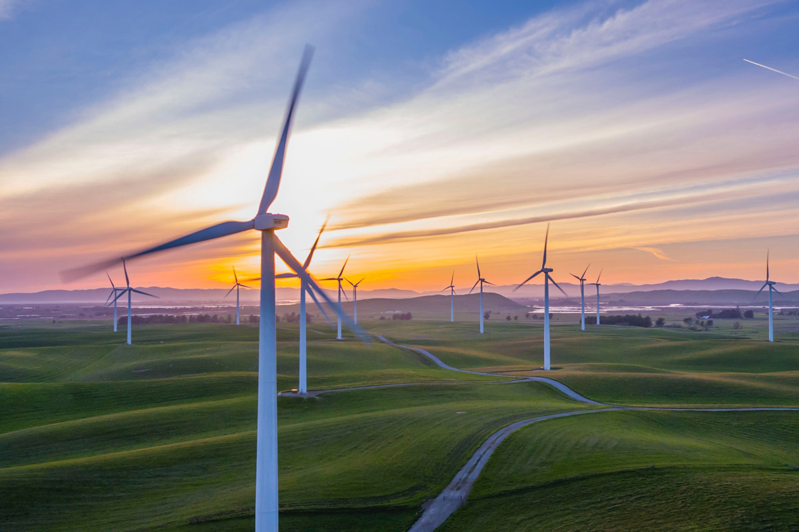

A energia eólica é uma forma de energia renovável que utiliza a força dos ventos para gerar eletricidade. Esse tipo de energia é considerado limpo e sustentável, pois não emite gases poluentes ou outros resíduos prejudiciais ao meio ambiente.
O funcionamento dos aerogeradores, que são as turbinas eólicas responsáveis por gerar a energia elétrica, é relativamente simples. As pás das turbinas capturam a energia cinética do vento e a transformam em energia mecânica, que é transferida por meio de um eixo até um gerador. O gerador, por sua vez, converte a energia mecânica em energia elétrica, que pode ser utilizada na rede elétrica ou armazenada em baterias.

Existem diversas vantagens associadas à energia eólica, dentre as quais destacam-se:
É uma fonte de energia renovável, pois o vento é uma fonte inesgotável de energia.
Não emite gases poluentes, o que contribui para a redução da emissão de gases do efeito estufa e, consequentemente, para a mitigação das mudanças climáticas.
É uma fonte de energia descentralizada, o que significa que pode ser produzida em pequena escala e distribuída em locais distantes dos grandes centros urbanos, reduzindo a necessidade de construção de novas usinas termoelétricas ou hidrelétricas.
É uma fonte de energia competitiva, pois o custo de produção da energia eólica tem se tornado cada vez mais competitivo em relação a outras formas de energia, como a energia gerada por combustíveis fósseis.
No entanto, a energia eólica também apresenta algumas limitações, como a necessidade de áreas com ventos constantes e fortes, o que pode limitar a sua viabilidade em determinadas regiões. Além disso, a construção de parques eólicos pode ter impactos ambientais negativos, como a alteração do habitat de animais e a interferência na paisagem. No entanto, esses impactos podem ser minimizados por meio de estudos de impacto ambiental e de planejamento adequado dos projetos.